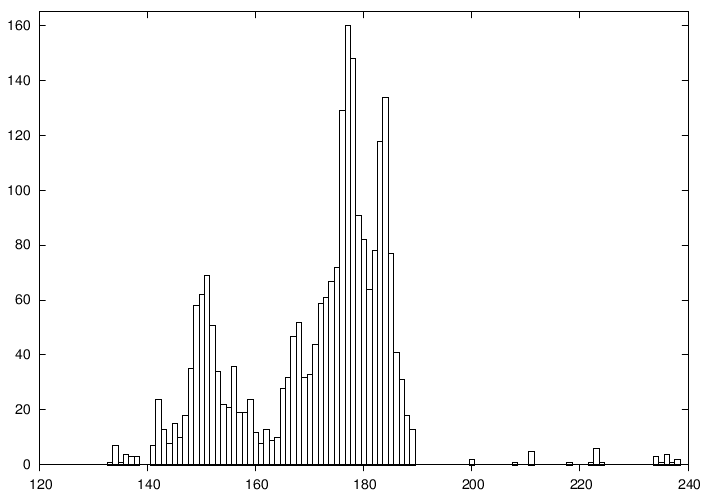
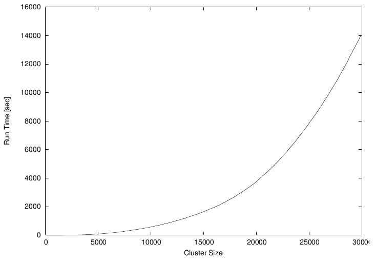
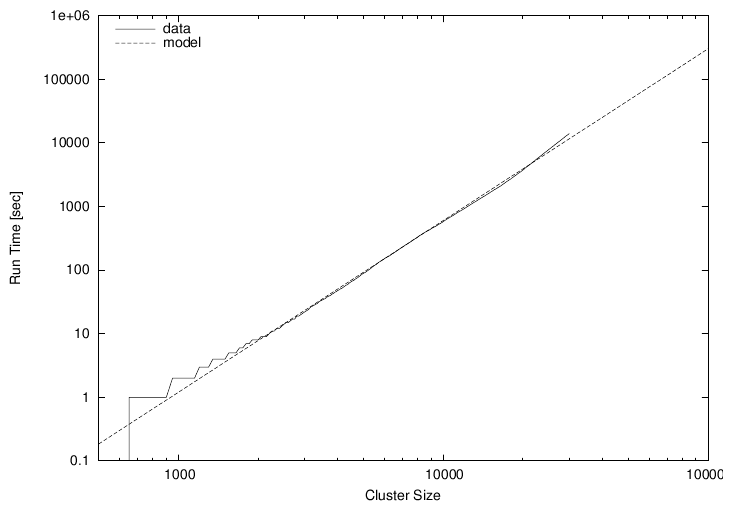

Gnuplot in Action
This article is based on Gnuplot in Action, to be published January 2009. It is being reproduced here by permission from Manning Publications. Manning early access books and ebooks are sold exclusively through Manning. Visit the book's page for more information.
The purpose of computing is insight, not numbers. -- R.W. Hamming The purpose of computing is insight, not pictures. -- L.N. Trefethen
Preface
I have been using gnuplot for 15 years, and it is an indispensable part of my toolset: one of the handful of programs I cannot do without.
Initially, I used gnuplot as part of my academic research work as a theoretical condensed matter physicist. But much later, when I joined Amazon.com, I found myself using gnuplot again, this time to analyze the movement of workers in Amazon's gargantuan warehouses and the distribution of packages to customers. Later yet, I found gnuplot very helpful when analyzing Web-traffic patterns for the Walt Disney Company.
I find gnuplot indispensable because it lets me see data, and to do so in an easy, uncomplicated manner. Using gnuplot, I can draw and redraw graphs and look at data in different ways. I can generate images of data sets containing millions of points, and I can script gnuplot to create graphs for me automatically.
These things matter. In one of my assignments, I was able to discover very relevant information because I was able to generate literally hundreds of graphs. Putting all of them on a Web page next to each other revealed blatant similarities (and differences) between different data sets - a fact that had never been noticed before, not least because everybody else was using tools (mostly Excel) that would only allow graphs to be created one at a time.
Gnuplot has always been popular with scientists all over - I hope to convince you that it can be useful to a much larger audience. Business analysts, operations managers, database and data warehouse administrators, programmers: really anybody who wants to understand data with graphs.
I'd like to show you how to do it.
Prelude: Understanding Data with Graphs
Gnuplot is probably the most widely used open-source program to plot and visualize data. In this book, I want to show you how to use gnuplot to make plots and graphs of your data: both quick and easy graphs for your own use, and highly polished graphs for presentations and publications.
But I also want to show you something else: how to solve data analysis problems using graphical methods. The art of discovering relationships in data and extracting information from it by visual means is called "graphical analysis". I believe gnuplot to be an excellent tool with which to do it.
As a teaser, let's take a look at some problems and how we might be able to approach them using graphical methods. The graphs here and in the rest of the book (with very few exceptions) have been, of course, generated with gnuplot.
A Busy Weekend
To get a feeling for the kinds of problems that we may be dealing with, and for the kinds of solutions that gnuplot can help us find, let's look at two examples. Both take place during a long and busy weekend.
Planning a Marathon
Imagine you are in charge of organizing the local city marathon. There will be over 2000 starters, traffic closed around the city, plenty of spectators - and a major Finish Line Festival to celebrate the victors and help the wounded. The big question is: When should the Finish Line crew be ready to deal with the majority of runners? At what point do we expect the big influx of the masses?
You have available to you the results from last year's event. Assuming that the starters have not improved dramatically over the last year (probably a safe assumption!), you do a quick average on the completion times and find that last year's average was 172 minutes. To be on the safe side, you calculate the standard deviation as well, which comes out to about 15 minutes. So you tell your crew to be ready for the big rush starting two and a half hours (150 minutes) after the start, and feel reasonably well prepared for the event.
So it comes as a bit of a surprise when on the big day plenty of runners start showing up on the finish line after only 130 minutes - a good twenty minutes earlier than the expected onset of the rush. In terms of event management, 20 or 30 minutes are not catastrophic, yet it is a bit strange. The next day you wonder: What went wrong?
Let's take a look at the data to see what we can learn about it. So far, all we know of it is the mean and the standard deviation.
The mean is convenient: It is easy to calculate and it summarizes the entire data set in a single number. But in forming the mean, we lost a lot of information. To understand the whole data set, we will have to look at it. And since we can't understand data by looking at more than 2000 individual finish times, this means we will have to plot it.
It will be convenient to group the runners by completion time and to count the number of participants that completed during each full minute. The resulting file might start like this:
# Minutes Runners 133 1 134 7 135 1 136 4 137 3 138 3 141 7 142 24 ...Now we plot the number of runners against the completion.

Figure 1.1. Number of finishers vs. time to complete (in minutes).
It is immediately obvious where we went wrong: the data is bi-modal, meaning it has two peaks. There is an early peak at around 150 minutes, and a later main peak at 180 minutes.
Actually, this makes good sense: A major sporting event such as a city marathon attracts two very different groups of people: "athletes", who train and compete throughout the year and are in it to win, and a much larger group of "amateurs", who come out once a year for a big event and are mostly there to participate.
The problem is that for such data the mean and standard deviation are obviously bad representations - so much so that at the time when we expected the big rush (170 minutes), there is actually a bit of a lull at the finish line!
The take-home message here is that it is usually not a good idea to rely on summary statistics (such as the mean) for unknown data sets. We always should investigate what the data looks like. Once we have confirmed the basic shape, we can choose how to summarize our findings best.
And of course, there is always more to learn. In this example, for instance, we see that after about 200 minutes almost everybody has made it, and we can start winding down the operation. The actual "tail" of the distribution is quite small - actually a bit surprisingly so (I would have expected to see a greater number of real "stragglers", but possibly many runners that are really slow drop out of the race when they realize they will place badly).
Using Gnuplot
Let's take a look at the gnuplot command that was used to generate figure 1.1. Gnuplot is command-line oriented: after you start gnuplot, it drops you into an interactive command session, and all commands are typed at the interactive gnuplot prompt.
Gnuplot reads data from simple text files, with the data arranged in
columns as shown above. To plot a data file takes only a single command:
plot, like this:
plot "marathon" using 1:2 with boxes
The plot command requires the name of the data file as
argument in quotes. The rest of the command line specifies which columns
to use for the plot, and in which way to represent the data. The
using 1:2 declaration tells gnuplot to use the first and
second column in the file called marathon. The final part of
the command: with boxes, selects a box style, which is often
suitable to display counts of events, as in this case.
Gnuplot handles most everything else by itself: it sizes the graph and selects the most interesting plot range, it draws the border, and it draws the tic marks and their labels. All these details can be customized, but gnuplot typically does a good job at anticipating what the user wants.
1.1.2. Determining the Future
The same weekend that 2000 runners are running through the city, a diligent graduate student is working on his research topic. He studies Diffusion Limited Aggregation (DLA), a process wherein a particle performs a random walk, until it comes in contact with a growing "cluster" of particles. At the moment of contact, the particle sticks to the cluster at the location where the contact occurred and becomes part of the cluster. Now, a new random walker is released to perform random walk, until it sticks to the cluster. And so on.
Clusters grown through this process have a remarkably open, tenuous structure (cf. figure 1.2). DLA clusters are fractals, but rather little is known about them with certainty.[1]

Figure 1.2. A DLA cluster of N=30,000 particles, drawn with gnuplot.
The DLA process is very simple, so it seems straightforward to write a computer program to grow such clusters in a computer, and this is what our busy graduate student has done. Initially, all seems well, but as the simulation progresses, the cluster seems to grow more and more slowly. Excruciatingly slowly, in fact. The goal was to grow a DLA cluster of N=100,000 particles - will the program ever finish?
Luckily, the simulation program periodically writes information about its progress to a log file: for each new particle added to the cluster, the time (in seconds) since the start of the simulation is recorded. We should be able to predict the completion time from this data, but an initial plot (figure 1.3) is just not very helpful: there are just too many ways that this curve can be extrapolated to larger cluster sizes.

Figure 1.3. Time required to grow a DLA cluster.
However, the time consumed by many computer algorithms grows as a simple power of the size of the problem. In our case, this would be the number N of particles in the cluster: T ~ Nk, for some value of k. Our research student therefore plots the running time of his simulation program on a double logarithmic plot versus the cluster size - and, lo, the data falls on a straight line, indicating power law behavior. (I will explain later how and why this works.) Through a little trial and error, he also finds an equation that approximates the data quite well. The equation can be extended to any cluster size desired and will give the time required. For N=100,000 (which was the original goal), we can read off T=300,000 seconds (or more), corresponding to 83 hours or four days, so we can tell our friend that there is no point in spending the weekend in the lab - he should go out (maybe run a Marathon), and come back on Monday. Or perhaps work on a better algorithm. (For simulations of DLA cluster growth, dramatic speedups over the naive implementation are possible. Try it if you like.)

Figure 1.4. Time required to grow a DLA cluster in a double-logarithmic plot, together with an approximate mathematical model.
1.1.2.1. Using Gnuplot
Again, let's see how the graphs in this section were created. The easiest to understand is figure 1.3. Given a file containing two columns, one giving the cluster size and the other giving the completion time, the command is simply:plot "data" using 1:2 with lines
The only difference compared to figure 1.1 is the style: rather than boxes,
I use line segments to connect consecutive data points, hence: with lines.
Did you notice that figure 1.3 and figure 1.4 contain more than just data? Both axes are now labelled! Details such as labels and other helpful decorations often make the difference between a mediocre and a high-quality graph, because they provide the observer with the necessary context to fully understand the graph.
In gnuplot, all details of a graph's appearance are handled by setting the appropriate options. To place the labels on the x- and y-axes in figure 1.3, I used:
set xlabel "Cluster Size" set ylabel "Run Time [sec]"
Figure 1.4 is drawn using double-logarithmic axes. This is yet another option, which is set as follows:
set logscale
Figure 1.4 shows two curves: the data together with a best "fit". Plotting
several data sets or mathematical functions together in one plot is very
simple: we just list them one after another on the command line for the
plot command:
plot "runtime" using 2:6 title "data" with lines, # # 1.2*(x/1000)**2.7 title "model"
This command introduces a further gnuplot feature: the title
directive. It takes a string as argument, which will be displayed together
with a line sample in the plot's key or legend (visible in the upper left
of figure 1.4).
Finally, we come to figure 1.2. That's a somewhat different beast. You will notice that the border and the tic marks are missing. The aspect ratio (the ratio of the graph's width to its height) has been constrained to 1, and a single dot has been placed at the position of each particle in the cluster. Here are the the most important commands that I used:
unset border unset xtics unset ytics set size square plot "cluster" using 1:2 with dots
You see that gnuplot is really very simple to use. In the next section, I'd like to talk more about using graphical methods to understand a data set, before coming back to gnuplot and discussing why it is my favorite tool for this kind of activity.
1.2. What is Graphical Analysis?
These two examples should have given you an idea what Graphical Analysis is and how it works. The basic steps are always the same:
- Plot the data.
- Inspect it, trying to find some recognizable behavior.
- Compare the actual data to data that represents the hypothesis from the previous step (e.g. in the second example above, we plotted running time of the simulation program together with a power-law function).
- Repeat.
We may try more sophisticated things, but this is the basic idea. If the hypothesis in step two seems reasonably well justified, we will often try and remove its effect, for instance by subtracting a formula from the data, to see whether there is any recognizable pattern in the residual. And so on.
Iteration is a crucial aspect of graphical analysis: plotting the data this way and that way, comparing it to mathematical functions or to other data sets, zooming in on interesting regions or zooming out to detect the overall trend, applying logarithms or other data transformations to change its shape, using a smoothing algorithm to tame a noisy data set... During an intense analysis session using a new but promising data set, it is not uncommon to produce literally dozens of graphs.
None of these graphs will be around for long. That's because they are transient, persisting just long enough for us to form a new hypothesis, which we'll try to justify in the next graph we may draw. This also means that these graphs will not be "polished" in any way, since they are the graphical equivalent to scratch paper: notes of work in progress, not intended for anyone but oneself.
This isn't to say that polishing doesn't have its place. But it comes later in the process: once we know what the results of our analysis are, we need to communicate them to others. At this point, we will create "permanent" graphs, which will be around for a long time - maybe until the next departmental presentation, or (if the graph will be part of a scientific publication, for instance), forever!
Such permanent graphs have different requirements: other people must be able to understand them, possibly years later, and most likely without us there to explain them. Therefore, graph elements like labels, captions, and other contextual information become very important. Presentation graphs must be able to stand by themselves. Presentation graphs also should make their point most clearly. Now that we know what the results of our analysis are, we should find the clearest and most easily understood way of presenting our findings. A presentation graph should make one point and make it well.
Finally, some would argue that a presentation graph should "look good". Maybe. If it makes its point well, there is no reason why it shouldn't be visually pleasing as well. But that is an afterthought. Even a presentation graph is about the content, not the packaging!
1.2.1. Data Analysis and Visualization Concepts
Data analysis and visualization is a broad field. Besides different graphical approaches, there are of course also other methods, which may do entirely without visual help. I think it will help to introduce and distinguish a number of terms and concepts for different activities in data analysis. At times the boundaries between these different concepts may be a little fuzzy, but I think the overall distinctions are quite clear.- Graphical Analysis
-
Graphical analysis is an investigation of data using graphical methods. The purpose is the discovery of new information about the underlying data set. In graphical analysis, the "proper" question to ask is often not known from the outset, but is discovered as part of the analysis process.
- Presentation Graphics
-
In contrast to graphical analysis, presentation graphics is concerned with the communication of information and results that are already understood: the discovery has been made, now it merely needs to be communicated clearly!
- Control Charts
-
I use the term "control chart" somewhat loosely for situations where we already know the questions to ask of the data (as in the case of presentation graphics), but where the primary audience for the graph is not the public, but the people who created the data themselves. Besides classical control charts (for example in quality engineering), many plots of experimental data fall into this category, because the question is determined at the outset and the graph is drawn to extract specific values to answer it.
- Reality Representation
-
What graphical analysis, presentation graphics, and control charts have in common is that they are "digital": some aspect of reality has been measured and translated into numbers, and it is these numbers which are plotted (temperature, stock price, electric field strength, response time, ... whatever).
Reality representation by contrast tries to construct an image that is in some form analogous to the system under consideration. A regular topographic map is a simple form of reality representation. More complex computer-assisted methods include three-dimensional solid body imaging, many ray-tracing systems, most immersive "virtual reality" methods, and many network flow or relationship connectivity visualization systems.
Data analysis using reality representation is a large, amorphous, and highly experimental field.
- Image Analysis
-
Image analysis takes a two- or (rarely) three-dimensional image of the system under investigation and tries to detect significant structure in this image, often using color variations to indicate changes in value - think medical imaging. Image analysis may either be highly automated (using signal-processing methods), or be done visually. In the latter case, it shares aspects with graphical analysis.
- Statistical Analysis
-
This is the "classical" definition of data analysis. Statistical analysis typically tries to characterize a data set by calculating some mathematical quantity (such as the mean, the median, or the standard deviation) from the data. Statistical analysis gives a quantitative answer to a known, well-posed question.
Statistical analysis works great if we know what questions to ask of the data, and if we want to perform essentially similar analyses repeatedly (for instance after varying some control parameter in a prescribed fashion). But it is not applicable if the questions to ask is yet unknown, and it can be misleading even otherwise, as our Marathon example has shown: statistical analysis always makes some (silent) assumptions about the data, which may not be fulfilled in practice. These challenges are well-known in the statistical community.
- Exploratory Data Analysis
-
Exploratory (or Initial) Data Analysis (EDA or IDA) is a term sometimes used in the statistical literature to describe the initial examination of data to determine its basic characteristics. Graphs typically play a large role. What makes it different from graphical analysis is that it is only seen as precursor to a "real" formal statistical analysis.
1.2.2. Why Graphical Analysis?
Graphical analysis is a discovery tool: we can use it to reveal as yet unknown information in data. In comparison to statistical methods, it helps us to discover new and possibly quite unexpected behavior.
Moreover, it helps us to develop an intuitive understanding of the data and the information it contains. Since it does not require particular math skills, it is accessible to anyone with an interest and a certain amount of intuition.
Even if rigorous model-building is our ultimate goal, graphical methods still need to be the first step, so that we can develop a sense for the data, its behavior and quality. Knowing this, we can then select the most appropriate formal methods.
1.2.3. Limitations of Graphical Analysis
Of course, graphical analysis has limitations and its own share of problems.
Graphical analysis doesn't scale. Graphical analysis is a manual process, which can't easily be automated. Each data set is treated as a separate special case, which is not feasible if there are thousands of data sets.
But this problem is sometimes more apparent than real. It can be remarkably effective to generate a large number of graphs and just browse them without studying each one in great depth. It is totally possible to scan a few hundred graphs visually, and doing so may already lead to a high-level hypothesis regarding the classification of the graphs into just a few sub-groups, which can then be investigated in detail. (Thank goodness gnuplot is scriptable, so that preparing a few hundred graphs poses no problem.)
Graphical analysis yields qualitative, not quantitative results. Whether you regard this as a strength or a weakness depends on your situation. If you are looking for new behavior, graphical analysis is your friend. If you are trying to determine by how many percent a new fertilizer treatment increases crop production, statistical analysis is the way to go.
It takes skill and experience. Graphical analysis is a creative process, using inductive logic to move from observations to hypothesis. There is no pre-scribed set of steps to move from a data set to conclusions about the underlying phenomena and not much that can be taught in a conventional, class-room format.
But by the same token, it does not require formal training, either. Ingenuity, intuition, and curiosity (!) are the most important character traits. Any one can play this game, if they are interested in finding out what the data tries to tell them.
1.3. What is Gnuplot?
Gnuplot is a program to explore data graphically. Its purpose is to generate plots and graphs from data or functions. It can produce highly polished graphs, suitable for publication, and simple throw-away graphs, when we are merely playing with an idea.
Gnuplot is command-line driven: you issue commands at a prompt, and gnuplot will redraw the current plot in response. Gnuplot is also interactive: the output is generated and displayed immediately in an output window. Although gnuplot can be used as a background process in batch-mode, typical use is highly interactive. On the other hand, its primary user interaction is through a command language, not through a point-and-click GUI interface.
Don't let the notion of a command-language throw you: gnuplot is easy to use - really easy to use! It takes only one line to read and plot a data file, and most of the command syntax is straightforward and quite intuitive. Gnuplot does not require programming, or any deeper understanding of its command syntax to get started.
So, this is the fundamental workflow of all work with gnuplot: plot, examine, repeat - until you have found out whatever you wanted to learn from the data. Gnuplot supports the iterative process model required for exploratory work perfectly!
1.3.1. Gnuplot is not GNU
To dispel one common confusion right away: gnuplot is not GNU software, has nothing to do with the GNU project, and is not released under the GNU Public License (GPL). Gnuplot is released under a permissive open-source license.
Gnuplot has been around a long time - a very long time, in fact. It was started by Thomas Williams and Colin Kelley in 1986. On the gnuplot FAQ, Thomas has this to say about how gnuplot was started and why it is called the way it is:
I was taking a differential equation class and Colin was taking Electromagnetics, we both thought it'd be helpful to visualize the mathematics behind them. We were both working as sys admin for an EE VLSI lab, so we had the graphics terminals and the time to do some coding. The posting was better received than we expected, and prompted us to add some, albeit lame, support for file data. Any reference to GNUplot is incorrect. The real name of the program is "gnuplot". You see people use "Gnuplot" quite a bit because many of us have an aversion to starting a sentence with a lower case letter, even in the case of proper nouns and titles. gnuplot is not related to the GNU project or the FSF in any but the most peripheral sense. Our software was designed completely independently and the name "gnuplot" was actually a compromise. I wanted to call it "llamaplot" and Colin wanted to call it "nplot." We agreed that "newplot" was acceptable but, we then discovered that there was an absolutely ghastly pascal program of that name that the Computer Science Dept. occasionally used. I decided that "gnuplot" would make a nice pun and after a fashion Colin agreed.
For a long time (about ten years), the stable major version of gnuplot was version 3.7.x, until version 4.0.0 was released in 2004. As part of the 4.x release, gnuplot has acquired a number of useful new features, including:
- palette-mapped color mode (pm3d), which makes it possible to choose colors for plots from continuous, user-defined color gradients ("palettes").
- much better text-handling capabilities, including the ability to read text from a file and use text as a plot style, support for common string functions and "enhanced" text mode, allowing the use of formatting commands and special characters in gnuplot graphs.
- new plot styles: filled curves and boxes, histograms, and vectors.
- improved output handling, including an entirely new interactive terminal based on the wxt widget set using the Cairo and Pango graphics and font libraries, resulting in a dramatically improved visual appearance over previous interactive gnuplot terminals. There are also many marginal improvements to other terminals, including a unified treatment of common pixmap file formats (GIF, PNG, JPG) using libgd.
- ... and many more.
gnuplotbeta@lists.sourceforge.net.
1.3.2. Why Gnuplot?
I have already mentioned the most important reasons why I like gnuplot: easy to learn, easy to use, excellent support for iterative, exploratory use, yet nevertheless scriptable for bulk or offline processing, able to produce publication-quality graphs.
Here are some other reasons why I believe gnuplot is a good tool for many situations:
- Stable, mature, actively maintained.
- Free and open-source.
- Available on all three platforms currently in use: Linux/Unix, Windows, Mac OS X.
- Able to generate polished, publication-quality graphs and offering detailed control over the final appearance of plots.
- Support for all common graphics formats (and quite a few less common ones).
- Reads regular text files as input. Pretty tolerant regarding the specifics of the input file format. (No need for the data to be in some special archive file format!)
- Support for very large datasets (easily many millions of data points).
- Modest resource consumption.
1.3.3. Limitations
It is important to remember that gnuplot is a data plotting tool, nothing more, nothing less. In particular, it is neither a numeric or symbolic workbench, nor a statistics package. It can therefore only perform rather simple calculations on the data. On the other hand, it has a very flat learning curve, requiring no programming knowledge and only the most basic math skills.
Gnuplot is also no drawing tool. All its graphs are depictions of some data set, and it therefore has only very limited support for arbitrary box-and-line diagrams and none at all for free-hand graphics.
Finally, gnuplot makes no attempt at what I earlier called "reality representation". It is a tool for quantitative analysis, and therefore its bread-and-butter are dot and line plots. It has no support for three-dimensional solid body imaging, ray-tracing, fish-eye functionality, and similar techniques.
Overall, though, I regard these limitations more as "strengths-in-disguise": in the Unix tradition, gnuplot is a rather simple tool, doing (mostly) one thing, and doing it very, very well.
1.4. Summary
In this article, I showed you a couple of examples which demonstrate the power of graphical methods for understanding data. I have also tried to suggest a suitable method for dealing with data analysis problems: plot the data, based on the plot identify the essential features of the data set, then iterate the process to bring out the behavior you are most interested in, and finally (not always, but often) develop a mathematical description for the data, which can then be used to make predictions (which, by their nature, go beyond the information contained in the actual data set).
Acknowledgments
Several data repositories on the web were very helpful, either because of the data sets available there or merely as a source of inspiration. Among the most helpful were:
- The data set collection and the "Data and Story Library (DASL)" at StatLib (http://lib.stat.cmu.edu)
- The UCI Machine Learning Repository at UC Irvine (http://www.ics.uci.edu/~mlearn/MLRepository.html)
- R. J. Hyndman's "Time Series Data Library" (http://www-personal.buseco.monash.edu.au/~hyndman/TSDL)
- The "Exploring Data" site at Central Queensland University (http://exploringdata.cqu.edu.au)
[1] The original paper on DLA was "Diffusion Limited Aggregation, A Kinetic Critical Phenomenon" by T. A. Witten and L. M. Sander and appeared in Physical Review Letters Vol. 41, p. 1400 in 1981. It is one of the most quoted papers in that journal of all time. If you want to learn more about DLA and similar process, you can check out Fractals, Scaling, and Growth Far From Equilibrium by Paul Meakin (1998).
Talkback: Discuss this article with The Answer Gang
![[BIO]](../gx/2002/note.png)
My education is in Physics, and I have worked as technology consultant, software engineer, technical lead, and project manager, for small start-ups and in large corporate environments, both in the US and overseas. I provide consulting services specializing in corporate metrics, business intelligence, data analysis, and mathematical modeling through my company, Principal Value, LLC (www.principal-value.com). I also teach classes on software design and data analysis at the University of Washington. Since starting this book, I have contributed a few patches to the gnuplot development version. I was thus able to add some features to gnuplot that I had been wanting desperately for years, providing further proof for the power of the open-source model. I hold a Ph.D. in theoretical physics from the University of Washington.